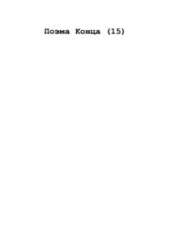
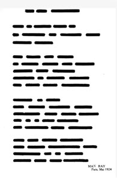
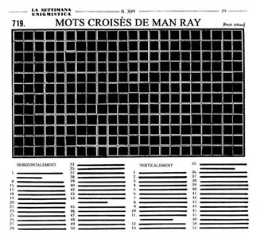
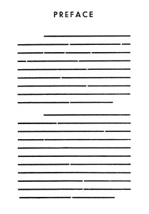
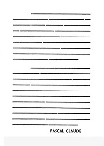
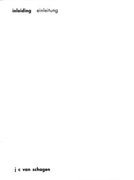
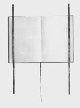
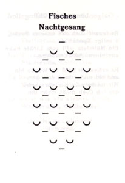

nothing
nothing
 radical
art
radical
art
 nothing
nothing
 radical
art
radical
art
Empty texts [abstract]
|
Vol. I, p. 73 |
Vol. IX, p. 69 |
Fra Elbertus [Elbert Hubbard]: Essay on Silence. East Aurora, NY: Roycroft, 1905. (56 pp.)
Margaret Anderson (ed.): The Little Review, Vol. III, No. 6 (September 1916). [Thirteen text pages, all empty] I loathe compromise, and yet I have been compromising in every issue by putting in things that were “almost good” or “interesting enough” or “important.” There will be no more of it. If there is only one beautiful thing for the September number it shall go in and the other pages will be left blank. Come on all of you!” [Margaret Anderson: "A Real Magazine" The Little Review, Vol. III, No. 5 (August 1916), p. 2] |
||

|
 |
 |
 |
 |  |
Pascal Claude: "Préface." In: Yves – Peintures. |
j.c. van schagen: "introduction." |
|
|
||
|
 Sophie Calle:
|
Empty space in books and magazines
|
Robert Barry: The Space between pages 29 & 30. In: Vito Accconci & Rosemary Meyer (eds): 0-9, 6 (July 1969). Robert Barry: The space between pages 74 & 75. In: Vito Accconci & Rosemary Meyer (eds): 0-9, 6 (July 1969). Michael Asher: Pages 42 and 43 [glued together]. In: Vision, 1 (1975). |
Empty texts [denotational]

Christian Morgenstern:
"Fisches Nachtgesang"
In: Galgenlieder, 1905.
Pierre de Massot: The Wonderful Book. Réflections on Rrose Sélavy. Paris, 1924.
Reprinted in: Étant donné Marcel Duchamp, n° 2, (February 2000), pp. 97-120.
Len Shackleton: "The average director's knowledge of football." Chapter 9 in: David R. Jack (ed.): Len Shackleton, Clown Prince of Soccer. His autobiography. 1955.
Jes Petersen: Piero Manzoni. Life and Works. Flensburg/Glücksburg: Petersen Presse, 1963. (102 pp.)
Available online through the Issuu page of Gian Paolo Guerini.
Reprint: Berlin: Petersen Press, 1969.George Lincoln Rockwell: Great Achievements of the Negro Race. Arlington, Virginia: The American Nazi Party, 1967. (16 pp.)
It seems that different versions of this book exist. The author is sometimes specified as J. Watts Turnbull, and the publisher as Sons of Liberty in Metairy, Louisiana or in Hollywood, California.
Victor David Dinnerstein: "The Wit and Wisdom of Spiro T. Agnew" Los Angeles, CA: Price Stern Sloan, 1969.
Anon.: The Official Government Nuclear Survivors Manual. Everything that is known about Effective Procedures in Case of Nuclear Attack. (192 pp.) Bill Adler Books, 1982.
Enzo Apicella: Memorie di uno sinemorato [Memories of an Amnesiac], 1983.
Margaret Turner: Joshua Sofaer. A Biography. London, 1997.
Jan Voss: Dieter Roth in Greenland. Amsterdam: Boekie Woekie, 2005.
James Wright: "In Memory of the Horse David, Who Ate One of My Poems." Collected Poems. Middletown, CT: Wesleyan University Press, 1971 (p.197)
Don Paterson: "On Going to Meet a Zen Master in the Kyushu Mountains and Not Finding Him." God’s Gift to Women, 1997.
Related work
|
Anthology
|
Quotes
|